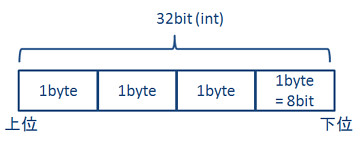

18th January 2020 at 5:51pm
「ImageJのRGB画像データの配列」は、int配列であると画像データの変換例で述べました。
では、1ピクセルの色を表現するint値から、どうやってRGBの輝度値（byte値）を取り出すのでしょうか。以下に説明します。
intは32bitです。1byte × 4のサイズです。

ImageJにおいて、上位1byteに透過率（a）、次に赤（r）、その次に緑（g）、下位1byteに青（b）の輝度値が収納されています。それぞれをビット演算を駆使して、取り出します。
int配列 image の i 番目の赤（r）、緑（g）、青（b）の輝度値を求めます。
byte b = (byte)(image[i] & 0xff);
byte g = (byte)((image[i] >> 8) & 0xff);
byte r = (byte)((image[i] >> 16) & 0xff);
赤（r）、緑（g）、青（b）の輝度値から、int配列 image の i 番目の値を求めます。
int b_int = (int)b;
int g_int = (int)g << 8;
int r_int = (int)r << 16;
int a_int = 0xff000000;
image[i] = a + r + g + b;こちらに、「ImageJのRGB画像データの配列」と「OpenCVのMatクラス」の変換を行う関数がありますので、参考にしてください。